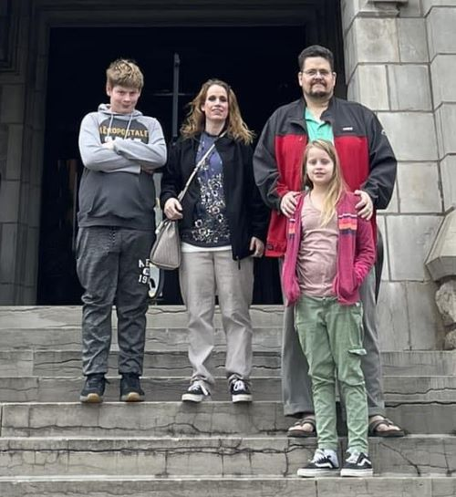

Audience
Persona 1

Demographics
"Erin is a fourty year old lady and a local tourist."
Motivation
Erin is motivated by her thriving family.
Erin loves exploring local foods and having an outdoor hiking adventure with her family while on
vacation.
Erin wants to find local businesses to plan her vacation but simple google searches
are not of any aid.
Erin would like to learn about local businesses she can visit to plan her vacation because she desires to help
support them.
Persona 2
Demographics
"Dave is a successfull business man and grandpa."
Dave is motivated by an intrest to expand his buisness into Bellevue Nebraska.
Dave is looking to see if Bellevue is a good fit for his busineess.
Dave wants to look to see the oppourtunities in the area for his business are worth while before he makes the desicion to expand.
Dave needs to find a way to connect and learn about the Bellevue Nebraska Chamber of Commerce.